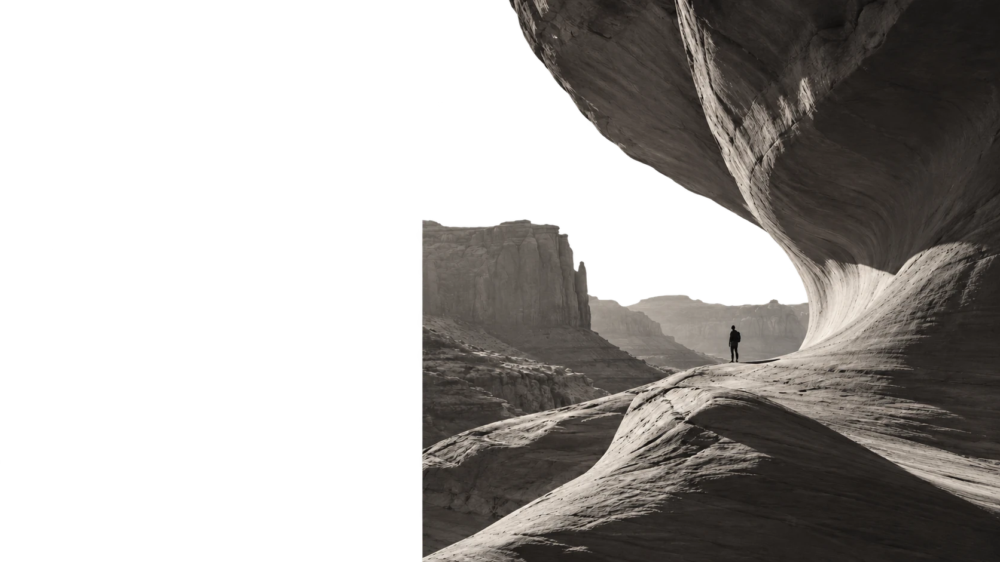

A LITTLE CLARITY, A LOT OF POSSIBILITY.
Good morning, Jamie.
Here's where good ideas become great work.
Active projects06 +2 this month
Tasks completed24 of 32 this week
Team momentum92% Looking good
Made possible by
JLMCAR+3Your people.
IN FOCUS FRM—024
The next chapter
of Forma.
A fresh identity. A clearer story. One shared vision.
MC Maya + 3 teammates

BRAND REFRESH2026 / 04
Your projects 06
Small steps. Meaningful progress.
On your radar
In the loop
LIVEMC
Maya shared the new direction.Brand refresh · 18 minutes ago
AR
Alex wrapped up the homepage.Website launch · 42 minutes ago
JL
You brought it all together.Weekly planning · Today, 9:00 AM